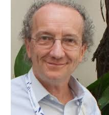
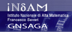
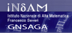
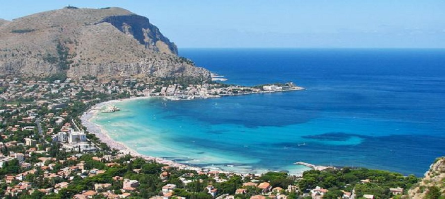

96th Peripatetic Seminar on Sheaves and Logic
October 11th-12th, 2014, Palermo, Italy
Celebrating the 60th birthday of Pino Rosolini
 The 96th PSSL will take place in Palermo, on the weekend of October 11th-12th, 2014. Talks will be held at the Dipartimento di Matematica e Informatica, located in via Archirafi 35, Palermo, Italy.
The 96th PSSL gives us the opportunity to celebrate the 60th birthday of Pino Rosolini, who has contributed to PSSLs since 1980 (16th PSSL meeting, Oxford, May 17th-18th 1980).
What is a PSSL?
Citing from PSSL93 website, "the PSSLs are a long-running series of meetings, usually held over a weekend at a university in Europe. Talks cover all aspects of category theory and its applications. The working atmosphere is informal, e.g. talks are usually short and may be about work in progress. The name is a (charming) historical relic - 'Peripatetic Seminar on Sheaves and Logic' - but most talks are not about sheaves or logic."
A curiosity: the 96th PSSL is going to be the southernmost PSSL meeting ever held.
Organizing committee
- Nicola Gambino, University of Leeds, UK - Università di Palermo, I
- Marco Geraci, Università di Palermo, I
- Sandra Mantovani, Università di Milano, I
- Giuseppe Metere, Università di Palermo, I
Sponsors
We gratefully acknowledge financial support from:- Dipartimento di Matematica e Informatica - Università di Palermo
- Dipartimento di Matematica - Università di Milano
- P.R.I.N. "Metodi logici per il trattamento dell'informazione"
- I.N.D.A.M. - G.N.S.A.G.A. Gruppo Nazionale per le Strutture Algebriche, Geometriche e le loro Applicazioni
- A.I.L.A. - Associazione Italiana di Logica e sue Applicazioni
 

HOME
Program
TBA.Information for speakers
The lectures will be held in the Aula 7 (Lecture Room 7) of the Department of Mathematics and Computer Science. The room has a reasonably-sized blackboard, data projector and a overhead projector. Please let the organizers know what you would prefer to use for your presentation.
HOME
Participants
TBA.HOME
Practical Information
Here you find suggestions and advices for traveling to Palermo, finding an accommodation and the location of the conference.Getting to Palermo by plane
The best way to reach Palermo is by plane. We recommend using
- Aeroporto di Palermo Falcone-Borsellino International Airport, very well linked to Palermo city centre (about 50 minutes by bus or train)
Other Sicilian airports of interest are:
- Aeroporto di Trapani-Birgi Vincenzo Florio Airport - Birgi (Trapani) (about 2 hours from Palermo, by bus)
- Aeroporto di Catania Filippo Eredia International Airport - Fontanarossa (Catania) (about 3,5 hours from Palermo, by bus)
There are many flights to Falcone-Borsellino International Airport from Rome, Milan and other Italian towns. It is also possible to find direct flights to Palermo from many European towns, operated by either low-cost or national/private companies. Visit the Falcone-Borsellino International Airport web site for more information.
Transportation from and to Falcone-Borsellino Airport
- By train. There is a train-metro service that connects the Falcone-Borsellino International Airport to the city. Train tickets must be purchased and validated before boarding the train. You can purchase the ticket from the ticket office or the machines. The train-metro station is at floor -1 of the Airport Terminal. Trains stop in many stations inside Palermo. The train-metro final stop is at the Central Railway Station, five minutes walking distance to the Conference venue and Hotel Villa Archirafi. For timetable information, destinations and prices you can visit the Italian Railways website: http://www.trenitalia.it
- By coach. From Falcone-Borsellino International Airport Arrivals Terminal you can take the Bus "Prestia & Comandè", that goes directly to the city centre. Buses depart from the airport at 5am, 6am, 6:30am and then every half an hour until midnight. If you stay in a hotel in, or near, the city centre, you should probably get off the bus at the "Politeama" stop. Again, the last stop is the Central Railway Station, five minutes walking distance to the Conference venue and Hotel Villa Archirafi. For more info, visit the company web site: Prestia & Comandè. Ticket (one way): € 6,20.
- By taxi. You can hire a taxi from the Airport to the city centre. The fare ranges from 40 to 60 Euro (max 4 people); ask to the taxi driver or at the desk outside the Arrivals Terminal.
Getting to Palermo by Boat
Palermo is well connected by boat to Naples, Livorno, Civitavecchia, Genova and other Italian towns. For more information you can visit the web sites of the following sailing companies:Grandi Navi Veloci, Grimaldi Group Napoli S.N.A.V., Siremar, Tirrenia.
Getting to Palermo by Train
Sicily, and Palermo, can be reached by train from most of Italian towns, but be prepared for a long trip... Normally, if you leave from Rome or Milan, you must take a train that brigs you to Reggio Calabria or Villa San Giovanni, then get the Ferry to Messina, and take again a train to get to Palermo.For more information you can visit the Italian Railways website: http://www.trenitalia.it
The Conference Location
Directions to the Dipartimento di Matematica e Informatica. The conference will be held at the Department of Mathematics and Informatics of the Università degli Studi di Palermo. The department building is n.34 of via Archirafi. You will get there probably coming from the railway station square (Piazza Giulio Cesare), walking down via Lincoln until it crosses with via Archirafi. Along via Archirafi, on the left, you first meet Hotel Villa Archirafi, then the various buildings of some Departments of the University of Palermo (see the main picture above in this page). This is an historical site of Palermo University, which nowadays is spread all over the town. Behind these buildings, you can barely see the botanic garden of Palermo.The Department of Mathematics and Informatics is located at n.34 of via Archirafi. A map of the area is available here.
Directions to the lecture room. The lectures will be held in Aula 7 (Lecture Room 7), which is located on the ground floor of the department. After entering the building, go through the central hall (where you can find vending machines) and then turn left.
Finding an Accommodation
Palermo is a major touristic attraction in Italy, but October is surely not peak season. In fact, the weather is usually fine, with an average of 20 oC, and few raining days, usually at the end of the month. The conference venue is not far away from the city centre, where you can find a variety of Hotels. To be considered also the Bed and Breakfasts: very good deals can be found in this period of the year. Down here we gathered some suggestions.- For the ones who prefer to stay very close to the conference venue, we have reserved some rooms at Hotel Villa Archirafi, that is located in the same street where the Department of Mathematics and Informatics is located.
- The bed and breakfast Palermo Art is also very close.
- The Hotel Posta
is a bit further away, but it should not take more than a 25 minutes
walk to reach the department. To reach it from the train station, you
should simply walk along via Roma and turn right when you reach the
"Poste e Telegrafi" building.
- The Hotel Letizia is
located near Piazza Marina, which is half-way between the department
and the city centre. To reach the department you can either go through
the old centre (which takes 15 minutes if you don't get lost) or via
the train station (which takes approximatively 25 minutes).
- The Hotel
Mercure is very close to the city centre. To reach the department,
you can either walk (30 minutes) or take one of the frequent buses to
the central train station and then walk.
- The bed and breakfast Coffee and the City is on the same street of the Hotel Mercure.
- More options are available on the Internet. Try here, or here.
HOME
About Palermo
(Freely extracted from the Wikipedia). Palermo [palεrmo] (Palermu [palεɽmu] in Sicilian) is a city of the south of Italy, on the northwestern coast of the island of Sicily. Capital of the autonomous Region of Sicily, it is the fifth Italian town by population after Rome, Milan, Naples and Turin. The city is noted for its history, culture, architecture and gastronomy, playing an important role throughout much of its existence; it is over 2,700 years old. The city was founded in 734 BC by the Phoenicians, who named it "Zyz" ("Flower" or "Shining"). The Greeks named the city "Panoremus" meaning "complete harbour". Palermo was part of the Roman Republic/Empire, and eventually part of the Byzantine Empire, for over a thousand years. From 827 to 1071 it was under Arab rule during the Emirate of Sicily, when it first became a capital. The Arabs corrupted the Greek name into Balarm, the root for its present-day name. Following the Norman conquest, Palermo became capital of a new kingdom (from 1130 to 1816), the Kingdom of Sicily. Eventually it would be united with the Kingdom of Naples to form the Kingdom of Two Sicilies until the Italian unification of 1860. Today Palermo, with an urban area population of more than 850000, is Sicily's cultural, economic and touristic capital. It attracts many tourists for its nice Mediterranean weather, its renowned gastronomy and restaurants, its Romanesque, Gothic and Baroque churches, palaces and buildings, and its nightlife and music.
Just outside Palermo, is located one of the greatest extant examples of Norman architecture in the world: the Cathedral of Monreale. It was begun in 1174 by William II, and in 1182 the church, dedicated to the Assumption of the Virgin Mary, was, by a bull of Pope Lucius III, elevated to the rank of a metropolitan cathedral.
The church is a national monument of Italy and one of the most important attractions of Sicily.
For touristic information about Palermo, you can click here.
HOME
Registration
If you wish to participate to the meeting, please send an email to
- giuseppe.metere {at} unipa.it
In the email, you will kindly specify your name, affiliation and if you wish to give a talk.
HOME